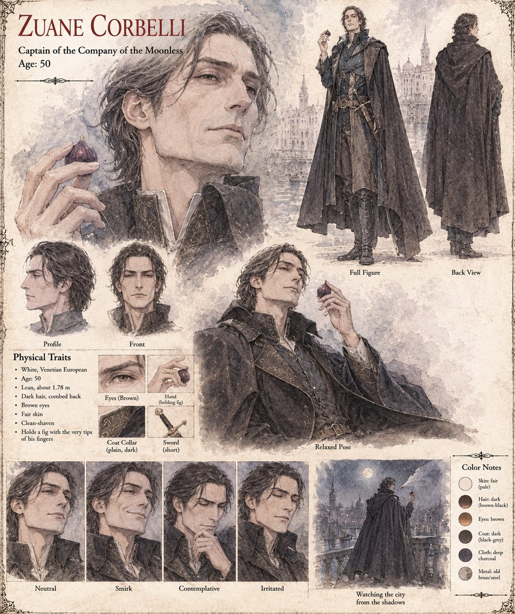

Zuane Corbelli
Captain of the Company of the Moonless · priced by the hour of darkness · eater of figs · 50
Captain of the Company of the Moonless, a lean, comfortable, unhurried man of fifty who priced his services by the hour of darkness. His four thousand men fight only at night: freedmen, salt-pan deserters, glassblowers ruined by the Order’s lamp-monopoly, and professional soldiers who consider daylight an unreliable employer. The Order’s doctrine had consigned them to the unlit long before the war, and they find the category extremely convenient. Domenica Ardizzon writes to him in Ferren, and he is waiting at the ford in the dark when the Lamp-Host arrives. The next morning he sits on an upturned boat at the edge of the willows in a plain dark coat, eating a fig with the very tips of his fingers, and tells the foreigner counting the dead that he is counting wrongly: six hundred and forty on this side, the others in the river. Six hundred and forty-one, says Higaide, pointing his spade at a small grey shape in the shallows, and Corbelli says So there are and eats the rest of the fig.
He offers the stranger employment, I pay by the hour of darkness. You would find it a very clean employment. The answer, Nobody’s, he does not understand and is not meant to. The contract Domenica drafts pays him by the hour between the first lamp and the first cock at a rate that rises with the length of the night: Winter was dear. Summer was very nearly a charity. He observes that it gives the Council every reason to prolong the war into the long nights and every reason to end it in the short ones, the most honest form of public finance he has been party to, and settles into marching all night, sleeping all day and invoicing in a fine clear hand. Asked by a Tribune whether he finds it troubling to make war on men at prayer, he says A war fought entirely by daylight, is a war fought for the convenience of the day; it is the only sentence in the Company’s records anyone thought worth copying, and both sides copy it. The Lamp-Host, forbidden to fight without blessed light, is beaten at night in every engagement of the first winter.
He sends six men under Sergeant Piovesan to Focolare’s own landing to see whether the grain the Council keeps hearing about is real and worth requisitioning. They come back with one reply from the hollow, thirteen seconds long, and Corbelli never sends a second patrol north of the ford, on a private theory he shares with nobody in his command: a valley the Sun’s own soldiers would not enter was a valley best left to whatever kept it that quiet. Focolare is not fought over after that.
The manuscript gives his age, his lean, comfortable, unhurried look, the plain dark coat, the fig, the Torrelume drawl and his trade; it gives no height, hair or eye colour. The sheet’s lean build of about 1.78 m, dark hair combed back, brown eyes, fair skin, clean-shaven face, long dark cloak and short sword are its own, as are its panels Neutral, Smirk, Contemplative and Irritated, its view Relaxed Pose (reclining, fig in hand) and its scene Watching the city from the shadows, which puts him at a balustrade under a full moon above a lagoon city; the manuscript has no such scene, and gives him at the ford and with his Company. The sheet’s title (Captain of the Company of the Moonless) and the fig held with the tips of the fingers follow the manuscript.
“Everyone is somebody’s, at this price”
Appears In

Related Subjects


Related Records

On the morning after the Lamp-Host met the Company of the Moonless at the ford of Sant’Elmo, Higaide walks the bank with a spade over his shoulder, counting. Corbelli, who sits on an upturned boat eating a fig, says there are six hundred and forty on this side; Six hundred and forty-one, says Higaide, and points to a small grey shape in the shallows with a lantern burning at the end of its outstretched hand. Bortolo Zanni watches from the ferry-house door with the dog at his heel.